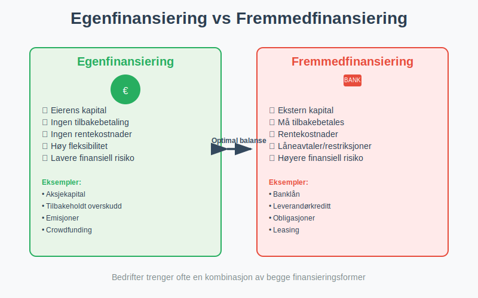
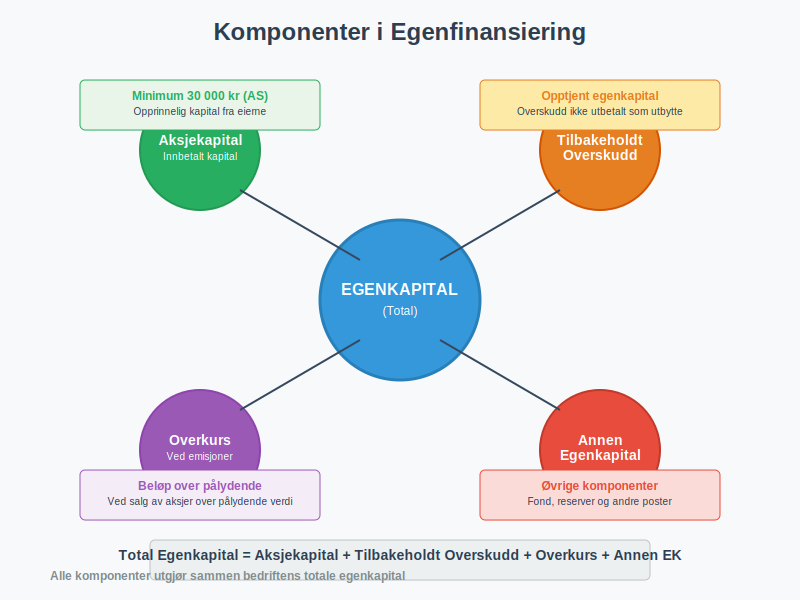
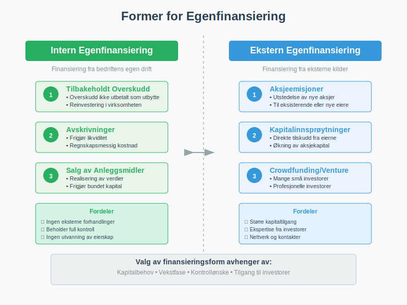

Egenfinansiering er finansiering av en bedrift gjennom egenkapital fra eierne, i motsetning til fremmedfinansiering gjennom lån og kreditt. Som en viktig metode for å skaffe finanskapital, er dette en grunnleggende finansieringsform som gir bedriften kapital uten å skape gjeld eller renteforpliktelser.

Hva er Egenfinansiering?
Egenfinansiering innebærer at bedriften finansieres gjennom egenkapital - penger og verdier som tilføres av eierne selv. Dette står i motsetning til fremmedfinansiering, hvor bedriften låner penger fra banker, leverandører eller andre eksterne kilder.
Hovedkomponenter i Egenfinansiering
Egenfinansiering består av flere elementer som sammen utgjør bedriftens egenkapital:
- Aksjekapital - Den opprinnelige kapitalen som eierne skyter inn
- Tilbakeholdt overskudd - Overskudd som ikke utbetales som utbytte, men beholdes i selskapet
- Overkurs - Beløp betalt utover pålydende verdi ved aksjeemisjoner
- Annen egenkapital - Andre former for eierkapital som ikke faller inn under de øvrige kategoriene

Egenfinansiering vs. Fremmedfinansiering
For å forstå egenfinansiering fullt ut, er det viktig å se forskjellene mot fremmedfinansiering:
| Aspekt | Egenfinansiering | Fremmedfinansiering |
|---|---|---|
| Eierskap | Eierne beholder kontroll | Ingen endring i eierskap |
| Tilbakebetaling | Ingen forpliktelse til tilbakebetaling | Må tilbakebetales med renter |
| Risiko | Lavere finansiell risiko | Høyere finansiell risiko |
| Kostnad | Alternativkostnad (tapt avkastning) | Rentekostnader |
| Fleksibilitet | Høy fleksibilitet | Begrenset av låneavtaler |
| Skatteeffekt | Ingen skattefradrag | Rentekostnader er fradragsberettiget |
Former for Egenfinansiering
Intern Egenfinansiering
Intern egenfinansiering skjer når bedriften finansierer seg selv gjennom tilbakeholdt overskudd:
- Tilbakeholdt overskudd - Driftsresultat som ikke utbetales som utbytte
- Avskrivninger - Regnskapsmessige avskrivninger som frigjør likviditet
- Salg av anleggsmidler - Realisering av verdier i bedriften
Ekstern Egenfinansiering
Ekstern egenfinansiering innebærer tilførsel av ny egenkapital fra eksterne kilder:
- Aksjeemisjoner - Utstedelse av nye aksjer til eksisterende eller nye eiere
- Kapitalinnsprøytninger - Direkte tilskudd fra eierne
- Crowdfunding - Innsamling av kapital fra mange små investorer
- Venturekapital - Profesjonelle investorer som kjøper eierandeler

Fordeler med Egenfinansiering
Finansiell Stabilitet
- Ingen rentekostnader - Egenkapital medfører ikke løpende renteutgifter
- Ingen tilbakebetalingsforpliktelser - Kapitalen trenger ikke tilbakebetales på bestemte tidspunkter
- Bedre betalingsevne - Sterkere finansiell posisjon
Operasjonell Fleksibilitet
- Færre restriksjoner - Ingen låneavtaler som begrenser handlingsrommet
- Fleksibel utbyttepolitikk - Eierne kan selv bestemme når og hvor mye som utbetales
- Lettere å tiltrekke fremmedkapital - Høy egenkapitalandel gjør bedriften mer attraktiv for långivere
Strategiske Fordeler
- Kontroll over virksomheten - Eierne beholder full kontroll
- Langsiktig perspektiv - Mindre press om kortsiktig lønnsomhet
- Fleksibilitet i investeringer - Kan investere i langsiktige prosjekter
Ulemper med Egenfinansiering
Kapitalkostnader
- Høyere kapitalkostnad - Egenkapital er normalt dyrere enn fremmedkapital
- Alternativkostnad - Eierne kunne investert pengene andre steder
- Ingen skattefordel - Utbytte er ikke fradragsberettiget som rentekostnader
Begrensninger
- Begrenset tilgang - Ikke alle bedrifter har tilgang til tilstrekkelig egenkapital
- Utvanning av eierskap - Nye aksjonærer reduserer eksisterende eieres andel
- Høyere avkastningskrav - Investorer forventer høyere avkastning på egenkapital
Egenkapitalandel og Soliditet
Egenkapitalandelen er et viktig nøkkeltall som viser hvor stor andel av bedriftens aktiva som er finansiert med egenkapital:
Egenkapitalandel = (Egenkapital / Sum aktiva) × 100%
Anbefalte Egenkapitalandeler
| Bransje | Anbefalt egenkapitalandel |
|---|---|
| Handel | 20-30% |
| Industri | 30-40% |
| Tjenester | 25-35% |
| Eiendom | 15-25% |
| Teknologi | 40-60% |
En høy egenkapitalandel indikerer:
- God soliditet - Bedriften tåler økonomiske tilbakeslag
- Lav finansiell risiko - Mindre sårbar for renteendringer
- Attraktiv for långivere - Lettere å få lån på gunstige vilkår
Egenfinansiering i Ulike Selskapsformer
Aksjeselskap (AS)
I et aksjeselskap skjer egenfinansiering primært gjennom:
- Innbetalt aksjekapital - Minimum 30 000 kr ved oppstart
- Emisjoner - Utstedelse av nye aksjer
- Tilbakeholdt overskudd - Overskudd som ikke utbetales som utbytte
- Aksjonærlån til AS - Lån fra aksjonærer som kan konverteres til egenkapital
Enkeltpersonforetak
For enkeltpersonforetak består egenfinansieringen av:
- Eierens private kapital - Penger eieren skyter inn
- Tilbakeholdt overskudd - Overskudd som reinvesteres i virksomheten
- Privatgarantier - Eierens personlige garantier
Regnskapsføring av Egenfinansiering
Egenfinansiering påvirker balansen på følgende måte:
Ved Kapitalinnskudd
Debet: Bank/Kasse
Kredit: Aksjekapital/Egenkapital
Ved Tilbakeholdt Overskudd
Debet: Årsresultat
Kredit: Opptjent egenkapital
Korrekt regnskapsføring av egenfinansiering er viktig for å gi et riktig bilde av bedriftens finansielle stilling.
Strategier for Optimal Egenfinansiering
Planlegging av Kapitalstruktur
- Analyser kapitalbehov - Vurder langsiktige finansieringsbehov
- Optimaliser kapitalstrukturen - Finn riktig balanse mellom egen- og fremmedkapital
- Vurder timing - Velg riktig tidspunkt for kapitalinnhenting
Intern Kapitaloppbygging
- Effektiv budsjettering - Planlegg for tilbakeholdt overskudd
- Kostnadsoptimalisering - Reduser unødvendige kostnader for å øke overskuddet
- Investeringsdisiplin - Prioriter investeringer som gir høy avkastning
Eksterne Finansieringskilder
- Investor relations - Bygg relasjoner med potensielle investorer
- Profesjonell presentasjon - Utvikl overbevisende forretningsplaner
- Nettverk - Bruk profesjonelle nettverk for å finne investorer
Moderne Egenfinansieringsmetoder
Crowdfunding og Alternative Finansieringsformer
Moderne teknologi har åpnet for nye former for egenfinansiering:
- Crowdfunding - Innsamling fra mange små investorer
- Peer-to-peer investering - Direkte investering mellom privatpersoner
- Online investeringsplattformer - Digitale markedsplasser for kapital
Skattemessige Hensyn
Ved egenfinansiering må man vurdere:
- Utbytteskatt - Skatt på utbetalt utbytte til eierne
- Gevinst- og tapskonto - Skattemessig behandling av kapitalgevinster
- Fradragsrett - Manglende fradragsrett for “renter” på egenkapital
Måling og Oppfølging
Nøkkeltall for Egenfinansiering
- Egenkapitalandel - (Egenkapital / Sum aktiva) × 100%
- Egenkapitalrentabilitet - (Årsresultat / Gjennomsnittlig egenkapital) × 100%
- Soliditetsgrad - Egenkapital / (Egenkapital + Langsiktig gjeld)
Rapportering og Analyse
Regelmessig analyse av egenfinansieringen bør inkludere:
- Utvikling i egenkapitalandel - Følg utviklingen over tid
- Sammenligning med bransjen - Benchmark mot konkurrenter
- Fremtidige kapitalbehov - Planlegg for vekst og investeringer
Juridiske og Regulatoriske Aspekter
Aksjeloven og Egenkapitalkrav
Aksjeloven stiller krav til:
- Minimum aksjekapital - 30 000 kr for AS, 1 million kr for ASA
- Kapitalnedsettelse - Prosedyrer for reduksjon av aksjekapital
- Utbytteregler - Begrensninger på utbetaling av utbytte
Regnskapslovens Krav
Regnskapsloven krever:
- Korrekt klassifisering - Riktig presentasjon av egenkapitalkomponenter
- Noteopplysninger - Detaljert informasjon om egenkapitalendringer
- Årsberetning - Redegjørelse for kapitalforvaltningen
Praktiske Råd for Bedriftsledere
Oppstart og Vekstfase
- Sørg for tilstrekkelig startkapital - Ikke undervurder kapitalbehovet
- Planlegg for vekst - Vurder fremtidige finansieringsbehov
- Bygg kredibilitet - Etabler gode relasjoner med potensielle investorer
Etablerte Bedrifter
- Optimaliser kapitalstrukturen - Finn riktig balanse mellom finansieringsformer
- Vurder tilbakekjøp av aksjer - Kan være aktuelt ved overskudd av kapital
- Planlegg utbyttepolitikk - Balancer mellom utbetaling og reinvestering
Fremtidige Trender
Digitalisering av Kapitalmarkedene
- Blockchain-baserte løsninger - Nye teknologier for kapitaltransaksjoner
- Automatiserte investeringsplattformer - AI-drevne matchmaking mellom bedrifter og investorer
- Tokenisering - Digitale representasjoner av eierandeler
Bærekraftig Finansiering
- ESG-investering - Økende fokus på miljø, samfunn og styring
- Impact investing - Investering med målsetning om positiv samfunnspåvirkning
- Grønn finansiering - Spesialiserte finansieringsformer for bærekraftige prosjekter
Relaterte Begreper og Konsepter
For å forstå egenfinansiering fullt ut, bør du også sette deg inn i:
- Aksjekapital - Grunnleggende egenkapital i aksjeselskaper
- Aksjer - Eierandeler som representerer egenkapital
- Aksjeselskap - Selskapsform som benytter egenfinansiering
- Aktiva - Eiendeler som finansieres gjennom egenkapital
- Avkastning - Forventet avkastning på egenkapital
- Balanse - Hvor egenkapitalen presenteres
- Betalingsevne - Påvirkes av egenkapitalandelen
- Crowdfunding - Moderne form for egenfinansiering
- Driftsresultat - Grunnlag for intern egenfinansiering
Egenfinansiering er en fundamental del av bedriftens kapitalstruktur som krever grundig planlegging og forståelse av både fordeler og ulemper. Ved å velge riktig balanse mellom egenfinansiering og fremmedfinansiering kan bedrifter optimalisere sin finansielle posisjon og skape grunnlag for bærekraftig vekst.